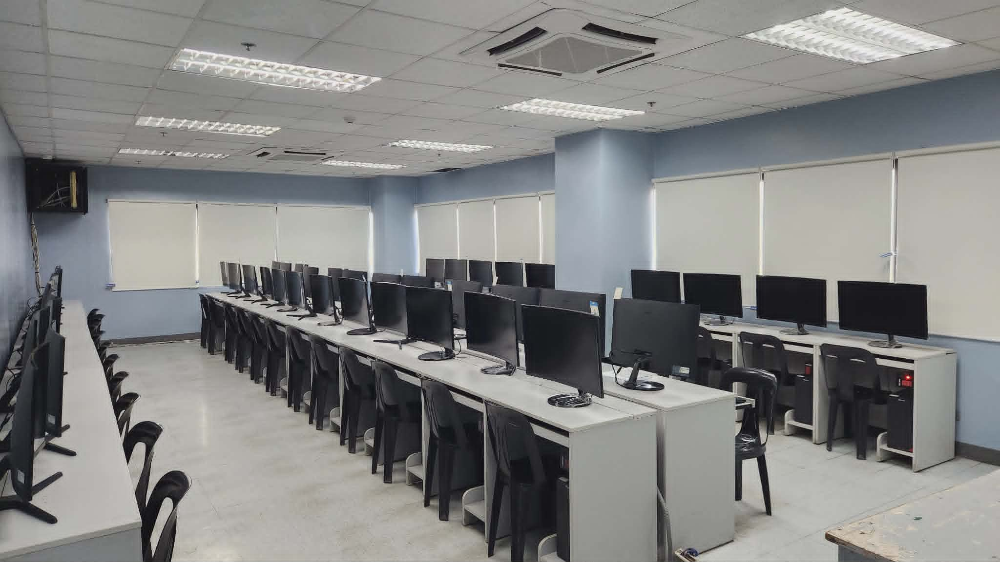
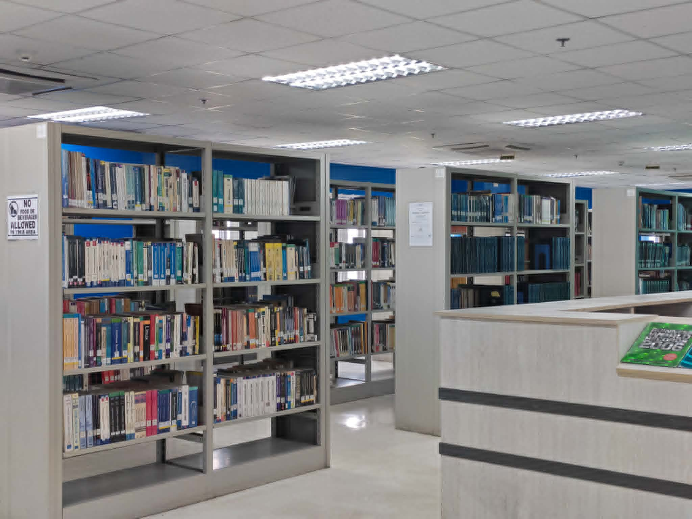
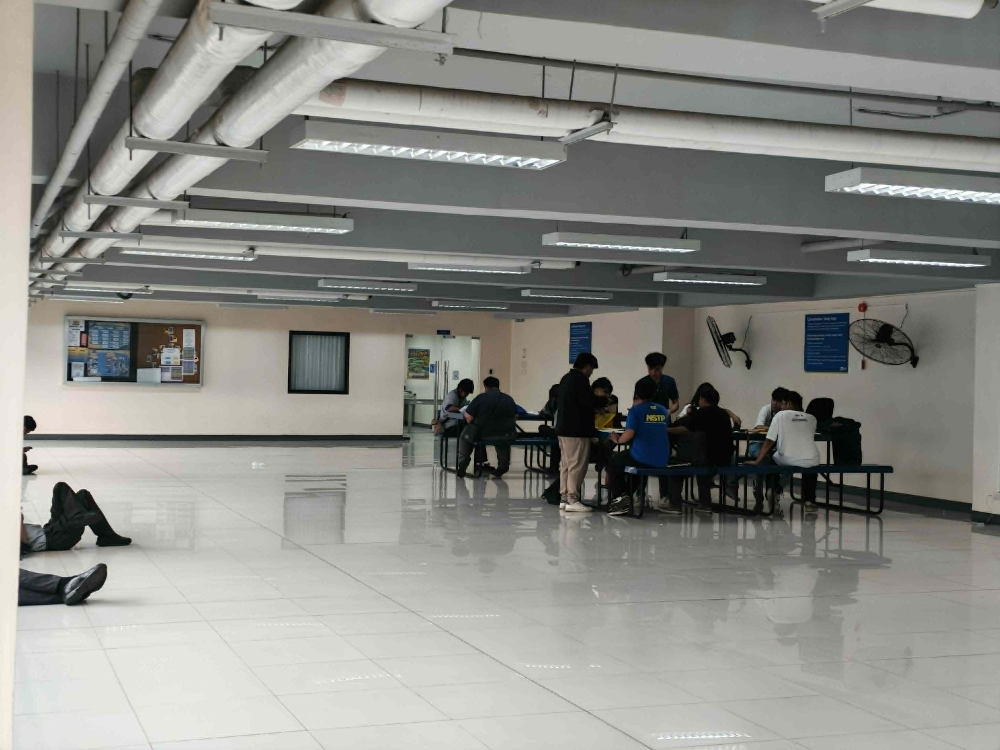
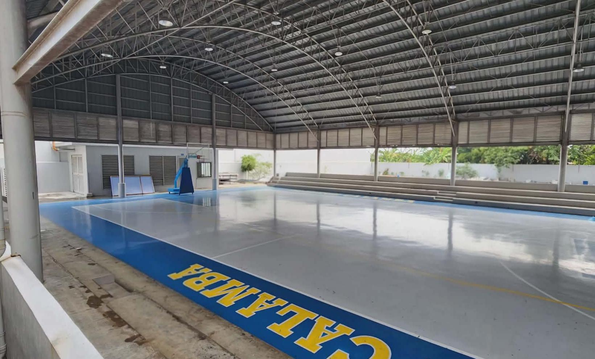
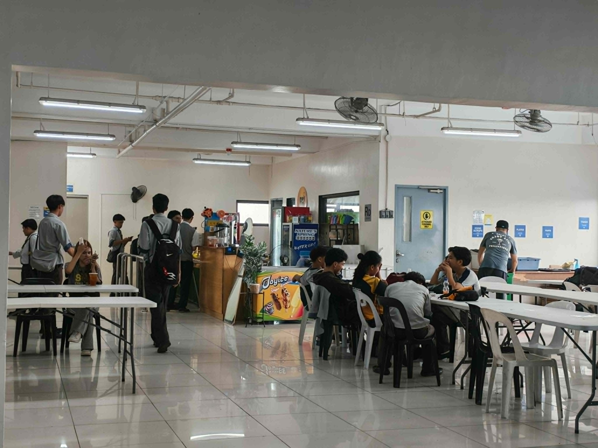

01
Cutting-edge facilities
Use computer laboratories and learning spaces designed for hands-on activities, coding practice, and collaboration.
Bachelor of Science in Information Technology
Develop practical skills in programming, systems, web technology, and problem-solving through hands-on learning at STI College Calamba.
Why choose BSIT?
BSIT prepares students for technology-driven careers by combining fundamentals, practical projects, and real-world problem solving.
Use computer laboratories and learning spaces designed for hands-on activities, coding practice, and collaboration.
Strengthen your foundation in web systems, programming logic, software development, and IT problem-solving.
Build confidence for opportunities in software, support, networking, systems, database, and other ICT fields.
Campus spaces





Featured facility
A dedicated learning environment where students can practice programming, web development, and other computer-based activities.
IT Faculty
Data Communications

Web Systems and Technology
Advanced Database System
Mobile Systems and Technologies
Information Assurance & Security
Systems Administration and Maintenance
Programming Languages
Network Technology
Professional Issues in Information Systems and Technology
Contact & Socials
Campus details and Facebook links are grouped together for easier browsing.
STI Academic Center, Barangay Uno, National Highway, Calamba City, 4027 Laguna
Telephone: (049) 502-8225